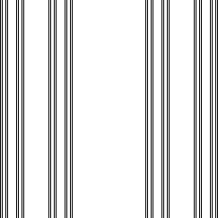

| This fractal is an instructive example for people who have seen the gasket and a few of its relatives. |
| The primacy of the gasket in early examples of fractals makes this shape one of the easiest to recognize. |
| The most common response to first seeing this picture is, "It's half a gasket." |
| But we don't have rules for making half of a fractal. |
| The main lesson here is that we're looking for scaled copies of the whole shape, and the whole shape is not a gasket. |
| Tracing small copies of the outline of the whole shape, perhaps cutting them out of paper, is a good way to build up intuition for this process. Here's a decomposition. |
| In the x-direction we see the familiar Cantor middle thirds set; in the y-direction just a line segment. |
|  |
| Again, look for scaled copies of the whole shape. Here's a decomposition. |
Return to Inverse Problems.